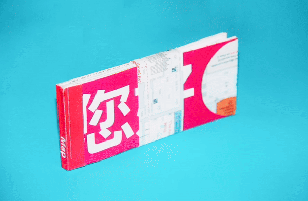
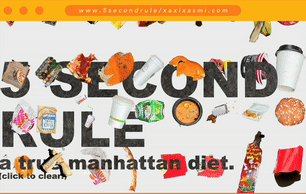

Made from collected maps and tickets, the MET map & ticket book serves as a visual archive of repeated visits, capturing a quiet history of art, memory, and place.

This project was an experiment—a visually bold documentary that breaks away from the usual dull stereotypes. It uses vibrant colors and large text to bring energy and clarity to sharing important information.

A TRESI Experimental video using mixed media. One of the first videos I produced for them.

From flipbook to motion, this exploration is an extension of my college thesis: a self portrait.


Coming from a third-world upbringing, transitioning to life in New York City has exposed the jarring contrast between its global prestige and the staggering daily waste that festers beneath it—feeding an unseen empire of rats beneath the so-called “greatest city in the world.”